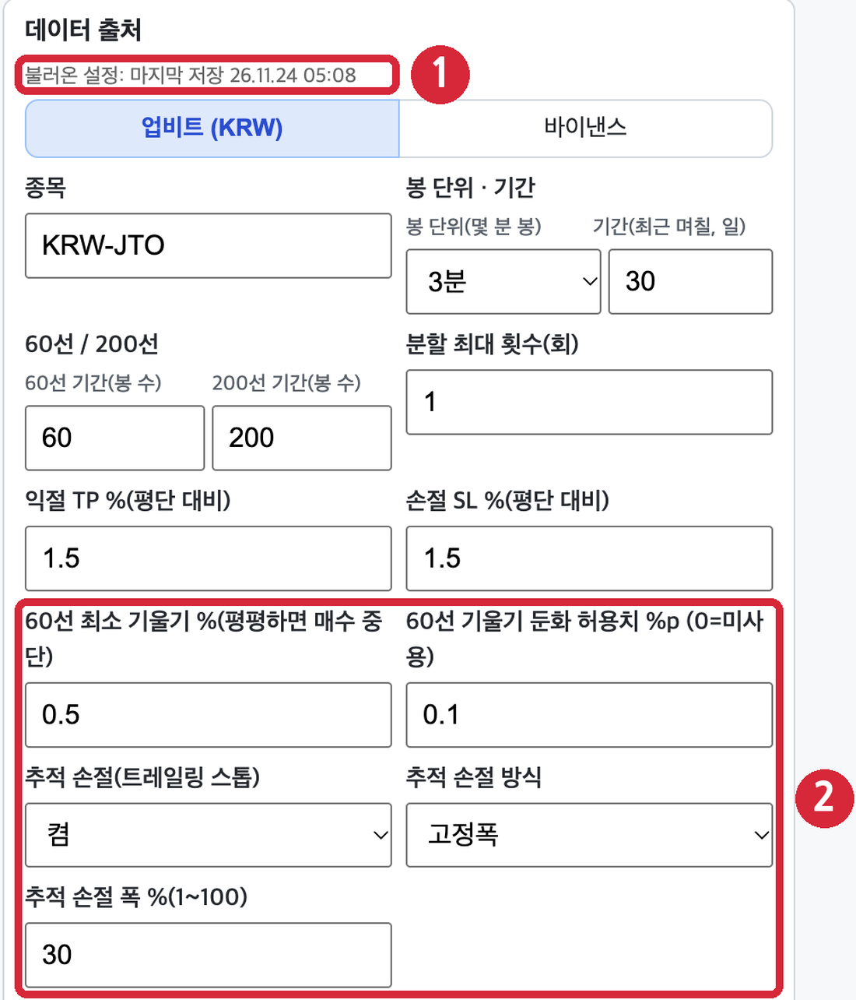
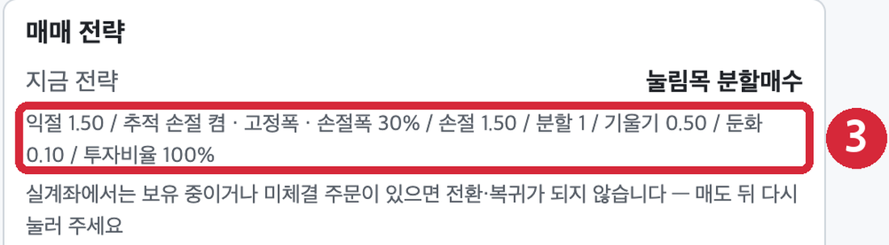
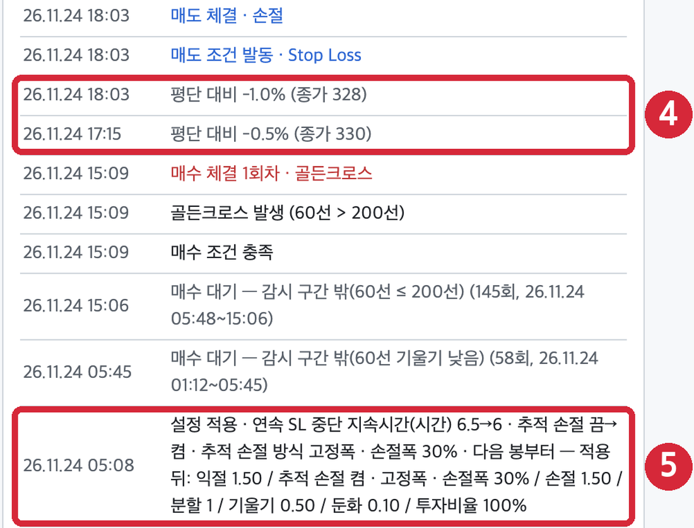

2026년 11월 25일 · 11/21 수정 요청과 11/23 답변을 반영했습니다

종목·봉 단위·기간·데이터 출처까지 마지막 저장 값으로 채워집니다. 한두 칸만 바꿔 바로 다시 돌려 보세요. 언제 저장한 값인지 맨 위에 보입니다.
60선 최소 기울기, 기울기 둔화 허용치, 추적 손절 켬/끔·방식·폭을 「설정 더 보기」를 펼치지 않아도 바로 바꿀 수 있습니다.

운용 탭 「지금 전략」 아래와 홈 「보유」 아래에 같은 줄이 나옵니다. 순서는 요청하신 대로 익절·추적 손절 / 손절 / 분할 / 기울기 / 둔화 / 투자비율입니다.

보유 중 가격이 평단보다 0.5%, 1.0% … 오르거나 내린 봉마다 한 줄씩 나옵니다.
무엇을 바꿨는지 한글로 나오고, 「적용 뒤:」 다음에 바꾼 뒤의 설정이 붙습니다. 추적 손절은 「끔→켬 · 방식 · 손절폭」으로 보입니다.
백테스터는 저장한 값으로 열리지만, 실제 매매는 「이 설정으로 동작」을 눌러야 바뀝니다. 저장한 값이 지금 매매 값과 다르면 맨 위 줄에 「지금 운용 값과 다름」이 함께 보입니다.
설정 한 줄은 「지금 설정」입니다. 익절·손절은 바꾸면 바로 쓰이지만, 추적 손절은 살 때 값을 씁니다.
봉 중간에 잠깐 닿은 움직임은 나오지 않습니다. 추가 매수로 평단이 바뀌면 새 평단으로 다시 세서, 같은 단계가 다시 나올 수 있습니다.
최근 기록으로 만들기 때문에 오래된 보유는 줄이 사라집니다. 업비트 앱에서 직접 사서 시작한 보유에도 줄이 없습니다. 보유 하나에 최근 40줄까지 보입니다.
틀린 값을 보여 드리지 않으려고 비워 둔 것입니다.
화면에서 다르게 보이는 곳이 있으면 화면을 찍어 보내 주세요.
지금은 키 만료 알림만 받고 계십니다. 곧 운영자가 받는 이 봇의 모든 텔레그램 알림을 투자자님 텔레그램에서도 같은 글 그대로 받게 됩니다.
「.env」, 「서버 IP」 같은 개발용 안내 줄은 운영자가 처리할 일입니다. 투자자님은 읽고 넘기셔도 됩니다.
지금처럼 한 번만 옵니다. 다만 키 만료일 점검이 실패한 알림이 함께 붙으면 같은 단계 글을 두 번 보실 수 있습니다.
서버 메모리가 기준을 넘으면 경고가 10분 간격으로 오고 엔진이 자동으로 다시 시작합니다.
운영자가 투자자님 쪽 알림만 바로 끌 수 있습니다. 매매에는 영향이 없습니다. 봇을 차단하셔도 매매는 그대로이고 알림만 멈춥니다.